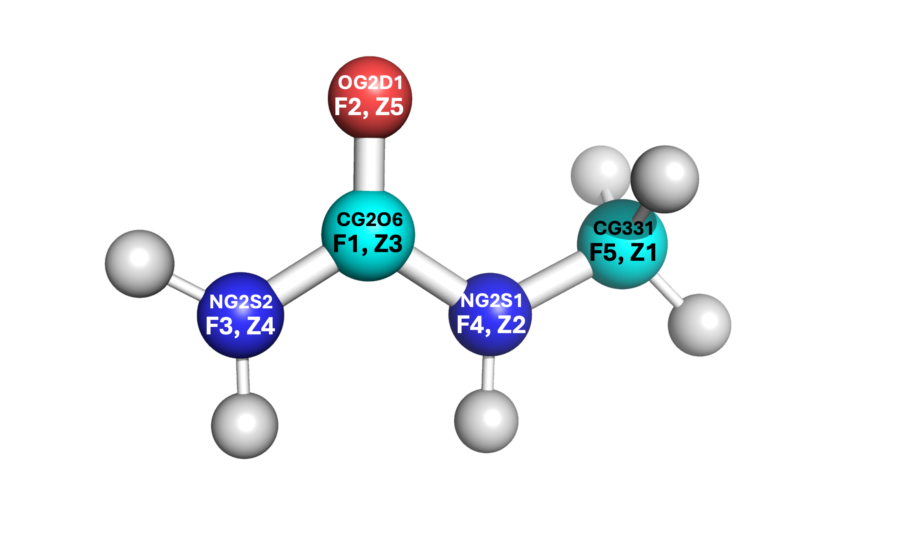
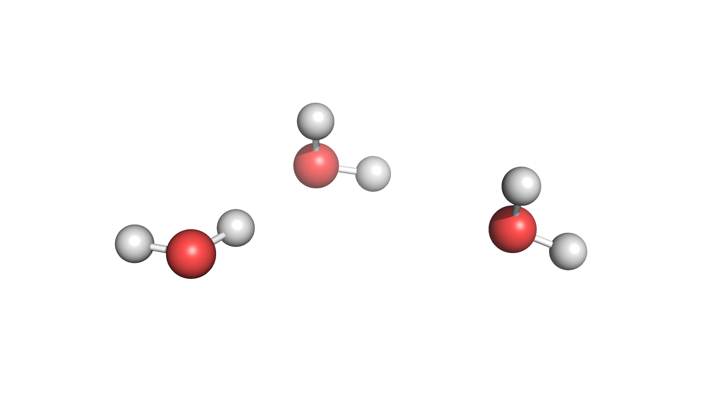

Developing Molecules for LAMMPS
Developing Molecules for LAMMPS
In order to run simulations for new molecules in LAMMPS, PACKMOL and MOLDEN must be used. This step-by-step tutorial should (hopefully) equip you with enough information to successfully create and optimize a molecule for LAMMPS usage.
Obtaining Force Field Data
If you have been provided a paper for a simulated molecule, most force field data should be in the Supplementary Information. However, this may not always be the case, or parts of the force field data may be missing. In this case, CGenFF is used. CGenFF is a force field website which optimizes the relevant data for a structure when provided a .mol2 file. From this, an .str file is produced, which can be viewed for creating the Z-matrix. You will need to create an account within CGenFF in order to upload .mol2 files.
To obtain .mol2 files, many options are available. The easiest is to find a structure for the molecule which has a 3D structure download link. PubChem often has structures, or you can find others by simply using Google. There exist converters to change certain file types (such as .sdf or .xml) to .mol2 or even .xyz files.
Once you have obtaiend the relevant files, login to CGenFF and select “Upload Molecule” from the screen. You can follow the steps as shown to make sure your molecule appears to be correct and submit the job. Then, you can download the .str file which contains all of its force field data from CHARMM.
Note
It is highly recommended you convert the CGenFF output .str file to a .txt file and print it out on paper. You can do this by just copying all the data from vi and pasting it to a .txt format, or you can find a converter online.
Once the force field data is obtained, make sure to keep the .mol2 file and the .str file handy as you create the molecule and optimize its structure.
CGenFF Example
The following CGenFF example is for 1-monomethylurea.:
* Toppar stream file generated by
* CHARMM General Force Field (CGenFF) program version 4.0
* For use with CGenFF version 4.6
*
read rtf card append
* Topologies generated by
* CHARMM General Force Field (CGenFF) program version 4.0
*
36 1
! "penalty" is the highest penalty score of the associated parameters.
! Penalties lower than 10 indicate the analogy is fair; penalties between 10
! and 50 mean some basic validation is recommended; penalties higher than
! 50 indicate poor analogy and mandate extensive validation/optimization.
RESI ***** 0.000 ! param penalty= 0.000 ; charge penalty= 0.000
GROUP ! CHARGE CH_PENALTY Z EL NB NBE RNG1 TYP RNG2 TYP RNG3 TYP
ATOM C1 CG2O6 0.226 ! 0.000 6 C 3 4
ATOM O OG2D1 -0.487 ! 0.000 8 O 1 2
ATOM N1 NG2S2 -0.521 ! 0.000 7 N 3 3
ATOM N2 NG2S1 -0.342 ! 0.000 7 N 3 3
ATOM C2 CG331 -0.011 ! 0.000 6 C 4 4
ATOM H1 HGP1 0.296 ! 0.000 1 H 1 1
ATOM H2 HGP1 0.296 ! 0.000 1 H 1 1
ATOM H3 HGP1 0.273 ! 0.000 1 H 1 1
ATOM H4 HGA3 0.090 ! 0.000 1 H 1 1
ATOM H5 HGA3 0.090 ! 0.000 1 H 1 1
ATOM H6 HGA3 0.090 ! 0.000 1 H 1 1
! TYP INR
BOND C1 O ! 2 0
BOND C1 N1 ! 1 0
BOND C1 N2 ! 1 0
BOND N1 H1 ! 1 0
BOND N1 H2 ! 1 0
BOND N2 C2 ! 1 0
BOND N2 H3 ! 1 0
BOND C2 H4 ! 1 0
BOND C2 H5 ! 1 0
BOND C2 H6 ! 1 0
IMPR C1 N2 N1 O
END
read param card flex append
* Parameters generated by analogy by
* CHARMM General Force Field (CGenFF) program version 4.0
*
! Penalties lower than 10 indicate the analogy is fair; penalties between 10
! and 50 mean some basic validation is recommended; penalties higher than
! 50 indicate poor analogy and mandate extensive validation/optimization.
BONDS
CG2O6 NG2S1 510.00 1.3700 ! DMCB & DECB, dimethyl & diehtyl carbamate, cacha & kevo
CG2O6 NG2S2 430.00 1.3600 ! UREA, Urea. Uses a slack parameter from PROT from NG2S2 CT3, neutral glycine, adm jr. ==> re-optimize
CG2O6 OG2D1 650.00 1.2300 ! UREA, Urea. Uses a slack parameter from PROT adm jr. 4/10/91, acetamide ==> re-optimize
CG331 NG2S1 320.00 1.4300 ! PROT NMA Gas & Liquid Phase IR Spectra (LK)
CG331 HGA3 322.00 1.1110 ! PROT alkane update, adm jr., 3/2/92
NG2S1 HGP1 440.00 0.9970 ! PROT Alanine Dipeptide ab initio calc's (LK)
NG2S2 HGP1 480.00 1.0000 ! PROT adm jr. 8/13/90 acetamide geometry and vibrations
ANGLES
NG2S1 CG2O6 NG2S2 70.00 115.00 ! from NG2S2 CG2O6 NG2S2, PENALTY= 1 CIR THIC
NG2S1 CG2O6 OG2D1 60.00 125.70 ! DMCB & DECB, dimethyl & diehtyl carbamate, cacha & kevo
NG2S2 CG2O6 OG2D1 75.00 122.50 50.00 2.37000 ! UREA, Urea. Uses a slack parameter from PROT adm jr. 4/10/91, acetamide update ==> re-optimize
NG2S1 CG331 HGA3 51.50 109.50 ! PROT NMA crystal (JCS)
HGA3 CG331 HGA3 35.50 108.40 5.40 1.80200 ! PROT alkane update, adm jr., 3/2/92
CG2O6 NG2S1 CG331 60.00 120.00 ! DMCB & DECB, dimethyl & diehtyl carbamate, cacha & kevo & xxwy
CG2O6 NG2S1 HGP1 40.00 121.50 ! DMCB & DECB, dimethyl & diehtyl carbamate, cacha & kevo & xxwy
CG331 NG2S1 HGP1 35.00 117.00 ! PROT NMA Vibrational Modes (LK)
CG2O6 NG2S2 HGP1 50.00 120.00 ! PROT his, adm jr. 8/13/90 geometry and vibrations NOW UREA ==> re-optimize???
HGP1 NG2S2 HGP1 23.00 120.00 ! PROT adm jr. 8/13/90 geometry and vibrations
DIHEDRALS
NG2S2 CG2O6 NG2S1 CG331 1.6000 1 0.00 ! from NG2S1 CG2O6 NG2S1 CG331, penalty= 1 THIC
NG2S2 CG2O6 NG2S1 CG331 2.5000 2 180.00 ! from NG2S1 CG2O6 NG2S1 CG331, penalty= 1 THIC
NG2S2 CG2O6 NG2S1 HGP1 4.0000 2 180.00 ! from NG2R51 CG2O6 NG2S1 HGP1, PENALTY= 10 CIR THIC
OG2D1 CG2O6 NG2S1 CG331 4.0000 2 180.00 ! DMCB, dimethyl carbamate, cacha & xxwy
OG2D1 CG2O6 NG2S1 CG331 0.9500 4 0.00 ! DMCB, dimethyl carbamate, cacha & xxwy
OG2D1 CG2O6 NG2S1 HGP1 0.0000 2 180.00 ! DMCB & DECB, dimethyl & diehtyl carbamate, cacha & kevo
NG2S1 CG2O6 NG2S2 HGP1 1.5000 2 180.00 ! from NG2S2 CG2O6 NG2S2 HGP1, PENALTY= 1 CIR THIC
OG2D1 CG2O6 NG2S2 HGP1 1.4000 2 180.00 ! PROT adm jr. 4/10/91, acetamide update NOW UREA ==> re-optimize???
HGA3 CG331 NG2S1 CG2O6 0.0000 3 0.00 ! DMCB, diethyl carbamate, kevo
HGA3 CG331 NG2S1 HGP1 0.0000 3 0.00 ! PROT, sp2-methyl, no torsion potential
IMPROPERS
CG2O6 NG2S1 NG2S2 OG2D1 80.0000 0 0.00 ! from CG2O6 NG2S2 NG2S2 OG2D1, PENALTY= 1 CIR
END
RETURN
Some things to note:
There exist multiple types for nitrogen (
NG2S1&NG2S2), carbon (CG2O6&CG331), and hydrogen (HGP1&HGA3). In order to determine which is which, the bonds and angles can provide key information. For example, the bond betweenNG2S1-CG331implies that theNG2S1nitrogen is bound to the methyl carbon. Additionally, theCG331-HGA3bond shows which hydrogens are for the methyl group. By process of elimination, this implies allHGP1hydrogens are bound to an amide group, theNG2S2nitrogen is an amide nitrogen only, and theCG2O6carbon is the central carbonyl. This process can be similarly seen via the angles.All
!denote comments, and all data afterward is from the CHARMM force field. You can ignore these comments. You can erase them so if you choose to print out the force field writeup they are not distracting when you enter the force field data into PACKMOL and the Z-matrix.
Note
It is vital to label which force field atom is associated to which Z-matrix atom. Atoms in the Z-matrix are not necessarily the same as atoms in the force field writeup. If you confuse the labels and assign the atoms per only one of the two orders, you will end up with an incorrect structure. See the example below where “F” denotes the force field writeup label and “Z” denotes the Z-matrix label.
{kind=link}
{kind=link}
Some of the angles contain other values, such as the
NG2S2-CG2O6-OG2D1angle and theHGA3-CG331-HGA3angle. These are known as the Urey-Bradley terms, and will be added later. For any other parameters that are within your molecule’s structure, only apply the valeus which can be put into the PACKMOL files (see PACKMOL for details).There exist two dihedral values for some of the same sets (
NG2S2-CG2O6-NG2S1-CG331andOG2D1-CG2O6-NG2S1-CG331). These are to denote the cis and trans conformations. You can choose which is which according to the structure’s current orientation, or by a stable orientation image found online. Only one of these dihedral conformations (cis or trans) should be entered.Each label within the FF document for an atom is equivalent to the atom’s type. For example, 1-monomethylurea has the following structure (see right). Even though one of the
HGP1hydrogens is on the side where the methyl group is located, it is still considered the same type as the otherHGP1atoms on the amide side.
Creating the Molecule
There are several key steps to creating a molecule for LAMMPS implementation. In order to fully encapsulate all of the steps, this quick start guide will reference relevant sections for generating an optimized molecular structure but remain brief.
Obtain force field data from CHARMM FF literature and/or some force field generator.
Create/edit the molecule and optimize its structure.
If you optimized directly in MOLDEN/Avogadro, import the coordinates into PACKMOL along with all force field data from Step 1.
If you plan to use LAMMPS to optimize via energy minimization, import the initial (unoptimized) coordinates into PACKMOL and create a single molecule simulation. Then run the energy minimization and apply the updated coordinates to PACKMOL to regenerate the molecule in its optimized form.
Use PACKMOL to generate your molecule in a system of solvent for your application.
Important
It is highly recommended that you read this tutorial carefully. PACKMOL, MOLDEN, and LAMMPS energy minimization have many details that require time and effort to ensure correctness.
Note
To see all relevant documents for a successful energy minimization (and examples of NpT simulations at varied concentrations) see the following path: /kuhpc/work/thompson/a122k651/packmol/energy_mins/methylurea/.
Implementing Force Field Data
There are multiple ways to create your molecule to import it into PACKMOL. For this tutorial, MOLDEN is used to create its structure and enter all relevant force field parameters.
It is of key importance that you upload the .mol2 structure onto your cluster profile. You can do this by creating a directory (within your PACKMOL directory) and placing the file there (you can also just copy and paste similarly to the .txt file conversion stated earlier). If you want to create the molecule from scratch, you can ignore this step. However, Z-matrices are picky about the placement of each atom so this could pose great difficulty when creating more complex molecules.
Begin by loading MOLDEN and starting the application. You can follow the steps in the MOLDEN documentation to upload the
.mol2file and open the Z-matrix editor.Select each atom in the first column and write its structure according to the rows of the Z-matrix . It is recommended that you write this down somewhere or create a
.txtfile to index which atom is which according to the Z-matrix. As seen in the note within the CGenFF example, the assignment according to the Z-matrix and force field writeup are not the same and should be differentiated accordingly.
{kind=link}
{kind=link}
{kind=link}
Input the bond lengths, angles, and dihedrals according to the force field writeup. You can measure bonds, angles, and dihedrals with the MOLDEN Control Panel by selecting “Bond”, “Angle”, or “Dihedral” under the “Calculate” heading.
Note
Do not be alarmed if some of the parameter (angle, dihedral) values are not in agreement according to the force field writeup and the MOLDEN structure. These will be adjusted accordingly once the structure is optimized. After the optimization has been completed, only the coordinates need to be implemented into PACKMOL. All other parameters can be stated in PACKMOL from the force field data (not from the measured angles/dihedrals on MOLDEN).
You can optimize the structure within MOLDEN (FF on the Control Panel, select Tinker CHARMM or Tinker xyz) or you can optimize with a LAMMPS energy minimization. For LAMMPS, please see Optimizing the Structure with LAMMPS. If you choose to use MOLDEN or Avogadro to optimize the strucutre, you can simply obtain the Cartesian coordinates and skip the energy minimization steps.
Export the Z-matrix (select Gaussain) and coordinates (Cartesian, select xyz from panel) on the ZMAT Editor page by pressing “Write Z-Matrix” after naming your file. Make sure to name the Z-matrix and Cartesian coordinate files differently. It is highly recommended to save both should any issues occur while you are creating your molecule during the PACKMOL stages.
PACKMOL Steps
Start by creating a directory within the PACKMOL directory for all PACKMOL starter files. You can follow along with the directions listed in the PACKMOL docs to create the structure.
Some key remarks to make your PACKMOL experience smooth:
Make sure to label all bonds, angles, dihedrals, and impropers within the
.connectfile.Remember that only the types for each parameter are given in their respective
.<param>coeffsfile.The only data which will not be included in CGenFF is the LJ pair coefficients and the coordinates themselves. You must obtain these via literature (LJ coeffs) and MOLDEN/Avogadro/other source (coordinates) respectively. For example, the coordinates for the TIP3P-FB water model are found online, and do not require MOLDEN/Avogadro to obtain.
If you make a mistake after completing the
molec_generatorstep, make sure to copy the newmolecule.pyfile once the changes are made and add it to the path:/path/to/My-Code-Collection/Util/general_system/molecules/to update the reference.
After the PACKMOL files have been created, you can make the
.inpfile to contain your system. If you plan to optimize with LAMMPS, make the.inpfile contain one molecule and ~20 Angstroms for the box length.Complete the
build.py < filename.inpstep. Make sure the arrow is pointing towardbuild.py.You will receive a
data.lmpsfile, severallmps.files, and some PACKMOL output stuff. I like to make a folder calledpackmol_outputsand put all of these (including the.inpfile) within it so I do not accidentally edit/delete something.
Optimizing the Structure with LAMMPS
Important
If you are using LAMMPS to optimize the geometry of the molecule, you are in the right section. If you used Avogadro or MOLDEN to optimize the geometry, this section can be ignored. Instead, skip to the PACKMOL docs (or see the brief summary) for a tutorial on creating PACKMOL documents.
LAMMPS Steps
Create a LAMMPS minimization file (must start with
in.). It is recommended you put this in its own directory, where all relevant LAMMPS things will be for the energy minimization step. The heading/footer of the file is seen below. You can create anin.energy_minfile and usecat path/to/lmps.* >> in.energy_minto add the relevantlmps.files to the LAMMPS input file.Make sure to update any Urey-Bradley terms and the dihedral integer values during this step. If no Urey-Bradley terms are present, you can adjust the
angle_styletoharmonic. If you use Urey-Bradley terms for some angles, all non-Urey-Bradley angles can have coefficients of 0. See the example for a system containing some (but not all) Urey-Bradley angle coefficients.Dihedral integers must be changed from floating point (i.e.
1.0becomes1) or else the simulation will not run. This is done by hand in thedata.lmpsfile.
Copy the
data.lmpsfile from PACKMOL to a directory where the LAMMPS minimization file is located.Create a energy minimization bash script. This can be seen below.
Run the script
sbatch energy_min.shto start your energy minimization process.
Note
Energy minimization should take less than 10 minutes to run. If your system takes more than 15 minutes, stop the simulation (scancel JOBID) and review the log.lammps file.
Note
Each lmps. file will provide a header with the parameter type for LAMMPS. For example, bond_style harmonic. This can be removed from the LAMMPS file as the header already accounts for these types.
LAMMPS Energy Minimization Header Example
units real
atom_style full
boundary p p p
pair_style lj/charmm/coul/long 10 10.5
pair_modify mix arithmetic
pair_modify tail yes
kspace_style pppm 1.0e-4
read_data data.FILENAME # name of data file goes here
bond_style harmonic
angle_style charmm # harmonic or charmm (Urey-Bradley terms)
dihedral_style charmm
improper_style harmonic
LAMMPS Energy Minimization File Example
units real
atom_style full
boundary p p p
pair_style lj/charmm/coul/long 10 10.5
pair_modify mix arithmetic
pair_modify tail yes
kspace_style pppm 1.0e-4
read_data data.methylurea
bond_style harmonic
angle_style charmm
dihedral_style charmm
improper_style harmonic
# Angle Coeffs Methylurea
angle_coeff 1 70.00000 115.00000 0.0 0.0
angle_coeff 2 60.00000 125.70000 0.0 0.0
angle_coeff 3 75.00000 122.50000 50.00 2.37 # Urey-Bradley terms
angle_coeff 4 51.50000 109.50000 0.0 0.0
angle_coeff 5 35.50000 108.40000 5.40 1.802 # Urey-Bradley terms
angle_coeff 6 60.00000 120.00000 0.0 0.0
angle_coeff 7 40.00000 121.50000 0.0 0.0
angle_coeff 8 35.00000 117.00000 0.0 0.0
angle_coeff 9 50.00000 120.00000 0.0 0.0
angle_coeff 10 23.00000 120.00000 0.0 0.0
# Bond Coeffs Methylurea
bond_coeff 1 510.000 1.370
bond_coeff 2 430.000 1.360
bond_coeff 3 650.000 1.230
bond_coeff 4 320.000 1.430
bond_coeff 5 322.000 1.111
bond_coeff 6 440.000 0.997
bond_coeff 7 480.000 1.000
# Dihedral Coeffs Methylurea
dihedral_coeff 1 2.50000 2 180 0.0 # notice integer dihedral values
dihedral_coeff 2 4.00000 2 180 0.0
dihedral_coeff 3 0.95000 4 0 0.0
dihedral_coeff 4 0.00000 2 180 0.0
dihedral_coeff 5 1.50000 2 180 0.0
dihedral_coeff 6 1.40000 2 180 0.0
dihedral_coeff 7 0.00000 3 0 0.0
dihedral_coeff 8 0.00000 3 0 0.0
# Improper Coeffs Methylurea
improper_coeff 1 80.00000 0.00000
# Pair Coeffs Methylurea
pair_coeff 1 1 0.07800 3.65270
pair_coeff 2 2 0.20000 3.29630
pair_coeff 3 3 0.07000 3.56360
pair_coeff 4 4 0.20000 3.29630
pair_coeff 5 5 0.12000 3.02910
pair_coeff 6 6 0.04600 0.40000
pair_coeff 7 7 0.02400 2.38760
neighbor 2.0 bin
neigh_modify every 1 delay 0 check yes
velocity all create 298.15 123456 dist gaussian
thermo_style custom step time temp etotal ke evdwl ecoul elong pe ebond eangle edihed eimp vol press density
thermo 50
timestep 1.0
minimize 1.0e-4 1.0e-6 100000 400000
write_data system_after_min.data
LAMMPS Energy Minimization Bash Script Example
Note
The bash script should end in .sh to be able to submit as a job.
#!/bin/bash
#SBATCH --job-name=energy_min
#SBATCH --partition=bigjay,thompson
#SBATCH --constraint=ib
#SBATCH --output=output.log
#SBATCH --nodes=2
#SBATCH --mem=6gb
#SBATCH --ntasks-per-node=20
#SBATCH --time=26:00:00
module load lammps/29Aug2024
echo Time is `date`
echo Directory is `pwd`
echo "Running on $SLURM_JOB_NODELIST nodes using $SLURM_CPUS_ON_NODE cores on each node"
mpirun lmp_mpi -in in.energy_min -screen none
cd ../
echo Ending Time is `date`
exit 0
Troubleshooting Energy Minimization
If the energy minimization simulation fails, the log.lammps file and output.log files can provide key details for the simulation. Most errors can be accounted to an issue in the structure of the molecule. Two major troubleshooting methods are recommended to find issues within your system.
Remove the
-screen nonephrase from theenergy_min.shfile. This will print all LAMMPS outputs to theoutput.logfile during the simulation. If thelog.lammpsfile only prints the LAMMPS version and no other lines, it is likely that theoutput.logfile will print nothing. Once this phrase is removed, if theoutput.logfile prints anyABORTmessages, there is something wrong with your structure.Add the following lines to your
in.energy_minfile. These lines are to be added below thetimestepline and before thewrite_dataline.:thermo_modify lost warn dump traj all 50 traj.xyz dump_modify traj element # list elements here in order for all atoms in the system, i.e. O H H for water.
Attempt to rerun the simulation. The
traj.xyzfile will print out the atoms and their coordinates every 50 time steps. You can adjust this should thetraj.xyzfile not print any coordinates.If you print the elements of the atoms (
dump_modify) you can then use PyMOL to visualize the structure by downloading thetraj.xyzfile to your desktop.
Note
If you do not list the elements and your traj.xyz file shows numbers for each atom, your structure will not display bonds correctly (i.e. they will be bound to everything and will look crazy). Make sure to edit these accordingly so PyMOL reads the atoms and automatically formats the bonds.
Note
If your PyMOL simulation shows floating atoms which are not bound to anything: This is a direct implication that all bonds are not listed in the .connect file in PACKMOL. You must list all bonds in the .connect file.
If your energy minimization is successful, a
system_after_min.datafile should be made. You will need to take the coordinates from this file to update the structure of the molecule. Below is an excerpt of the.datafile.:Atoms # full 1 1 1 -0.011 4.637224824258854 3.939505581798852 2.720061084395536 0 0 0 2 1 2 -0.342 4.234156216717911 4.221940890505587 4.05802642237323 0 0 0 3 1 3 0.226 3.1658553620638044 3.5190398618536536 4.5548357700110875 0 0 0 5 1 5 -0.487 2.582610268034431 2.677395841085764 3.8647055934269243 0 0 0 8 1 6 0.273 4.75773122119284 4.915999376212109 4.548650471430572 0 0 0 9 1 7 0.09 5.505632660948109 4.569436036834264 2.4390591532339316 0 0 0 10 1 7 0.09 4.913210613313182 2.8674205690506347 2.6360109369635523 0 0 0 11 1 7 0.09 3.7921275781667827 4.142204318594125 2.0291791578934393 0 0 0 4 1 4 -0.521 2.7872392741492495 3.8007105470089186 5.845925212783197 0 0 0 6 1 6 0.296 3.260203074178855 4.483148645078783 6.405233040214911 0 0 0 7 1 6 0.296 2.011495906975985 3.3125153319773095 6.253272157273618 0 0 0
Copy these lines and paste them into an arbitrary
.xyzfile. From this, the first, fifth, sixth, and seventh columns are used.:11 1 4.637224824258854 3.939505581798852 2.720061084395536 2 4.234156216717911 4.221940890505587 4.05802642237323 3 3.1658553620638044 3.5190398618536536 4.5548357700110875 5 2.582610268034431 2.677395841085764 3.8647055934269243 8 4.75773122119284 4.915999376212109 4.548650471430572 9 5.505632660948109 4.569436036834264 2.4390591532339316 10 4.913210613313182 2.8674205690506347 2.6360109369635523 11 3.7921275781667827 4.142204318594125 2.0291791578934393 4 2.7872392741492495 3.8007105470089186 5.845925212783197 6 3.260203074178855 4.483148645078783 6.405233040214911 7 2.011495906975985 3.3125153319773095 6.253272157273618
From these columns, you can update the coordinates for the atom which corresponds with the first column for each row accordingly.
Note
Notice that the first column is not in sequential order. Make sure the atom you are updating the coordinates of is the atom listed in the row of the new coordinates file (i.e. atom 1 is the first atom in the PACKMOL contents and should have its element label). You can visualize this by updating the numbers with each respective element and visualizing in PyMOL to make sure the structure is equivalent to the desired molecule.
Importing Optimized Geometry to PACKMOL
If you have successfully completed the LAMMPS energy minimization steps, you should obtain a file called
system_after_min.data. This file contains the updated coordinates for the molecule now that its structure has been optimized. You can return to the PACKMOL input files and insert the new coordinates into the.connectfile. Be mindful to update each atom accordingly as the order will be different.Remove the
molecule.pyfile and all relevant build directories (raspa/,tmp/, andconnect/).Use
molec_generator.pyto create an updatedmolecule.pyfile and copy it to thepath/to/My-Code-Collection/Util/general_system/molecules/path.Make a new
.inpfile for a simulation containing a solvent and your molecule at a desired concentration.Enter
build.py < molecule.inpto build the data file. Use thisdata.lmpsfile to run whatever LAMMPS simulation you’d like. You cancat lmps.* >> in.LAMMPSto make all required files for the NpT, NVT, or NVE simulation that you plan to run.Congratulations! You have successfully created and optimized your molecule for LAMMPS application. You should now be able to run simulations with your molecule and obtain data.
Other LAMMPS Tips
{kind=link}
If you are running LAMMPS simulations and have questions that are not readily available in the docs, here are some quick tips to make your simulations a success.
SHAKE parameters are used for bonds involving hydrogens and fix their length/angle to prevent vibrations. For example, the
O-Hbonds on water are often used with SHAKE.TIP3P-FB already employs SHAKE on water bonds and angles, so they need not be mentioned in the SHAKE command line.
SHAKE cannot be used for energy minimization as the entire point is to fluctuate the structure to reach an optimized state. It can, however, be used for NpT, NVT, and NVE simulations.
For simulations with data editing, some time-saving recommendations:
Make sure your conda environment/python module is loaded (see Cluster Commands) prior to running trajectories that have python calculations associated.
Make a separate bash script for just the analysis code should you run the LAMMPS simulations but have issues with the analysis codes. For example, a bash script for the LAMMPS simulations (which runs the NVEs and calculates MSD) but a separate bash script just for the MSDs will save time should something change with the MSD script.
Make a check script that runs through all files (NVE-specific) to make sure the simulations have been run successfully.
Print both the solvent and solute
.xyzfiles for analysis (even if you do not need one of them at the beginning) or print the entire system as an.xyzfile. Directories can always be zipped later to conserve space!